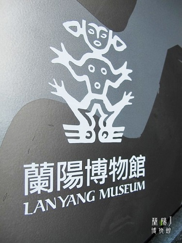

风景篇
థ౪థ台北101大樓


❥ 臺北的地標，世界第二高大樓，觀景臺可俯瞰整個臺北市。每年新年會舉行大型跨年焰火表演。
❥ 大樓擁有世界最快速電梯，38秒即可直達89層觀景臺。搭乘電梯時，擡頭看看天花板，頭頂的星辰圖會隨著電梯上升而擴散開。
❥ 大樓88層有世界最大、最重，且唯一可參觀的風阻尼器。（風阻尼器是高層建築應對地震，吸收震波的一種裝置。）
( ͡° ͜ʖ ͡°)信義誠品書店


❤ 全店以“國際、薈萃”為定位，經營內容和空間規劃由“閱讀與生活的博物館”和“臺灣面向世界的文化窗口”出發，帶給消費者與世界同步的美好生活。
❤ 誠品信義旗艦店的書店涵納近20萬種書目、100萬冊書籍，全年舉辦新書發表、表演藝術、藝文講座等各式交流活動，誠品希望能成為所有人文藝術創意工作者,長期且最大、最重要的發表平臺。
❤ 全館復合商場運用“連鎖而不復制”的誠品經驗，以在地觀點與國際視野，匯集流行精品、時尚服飾、特色美食、創意禮品、居家擺設等多元化的世界級經典商家進駐，創造國際化的臺北城市意象與誠品life style的文化品牌，成為華人市場最具指針性的“國際文創交流平臺”。
( • ̀ω•́ )外澳沙灘


✔ 宜蘭頭城的外澳就在烏石港北面，是一處平坦的沙灘，雪白的浪花一波波地打上岸來，在陽光照耀下，波光粼粼，龜山島的身影隱約可見。
✔ 除了弄濤戲水，這裡還有著結合刺激、技巧、難度於一身的極限運動，諸如飛行傘、衝浪等需要膽識的活動。
✔ 在外澳沙灘旁有店家提供衝浪教學，遊客可以一嘗浪裡奔馳的快感。另外，在外澳沙灘後方的公路旁，可見飛行傘逐漸飛揚騰空，隨著氣流左右翻飛，緩緩地下降，想要一覽整個外澳的海岸線，可以嘗試乘坐飛行傘飛上天後俯視，美麗又壯觀。
ヽ(*´∀`)中正紀念堂


► 中正紀念堂位於臺北市中心，是為紀念蔣介石而建造的紀念堂，全區包括中正紀念堂、中正紀念公園、牌樓、圍捕、瞻仰大道、兩側為劇院及音樂廳。
► 中正紀念堂是以中國庭園造景為主要設計，加廊窗棱古典而幽雅，整體建築則以藍、白二色搭配相和，有著自由、平等的寓意。
► 四樓銅像大廳觀看每天9:00-17:00整點莊嚴隆重的的換崗儀式。整套儀式共10分鐘，督導全程監督。儀式結束後，遊客可上前在護欄外進行拍照。
► 底層可參觀兩部過去蔣介石禦用的凱迪拉克轎車和他在總統府辦公室的場景。
(๑¯∀¯๑)闌陽博物館

♣ 由姚仁喜先生領導的大元聯合建築師事務所設計，博物館建築量體是以北關海岸一帶常見的單面山為設計依據，單面山是指一翼陡峭，另一翼緩斜的山形，是本區域獨有的地理特質。
♣ 建築師選取韋瓦第小提琴協奏曲「四季」的主旋律，在建築實量體的外牆，將協奏曲中「春」、「夏」、「秋」、「冬」四篇樂章的音符，以多重質感的石材轉化為音符，依序排列至建築主體的四個實體外牆上。
♣ 顧及烏石礁遺址溼地生態的完整，本著「與環境共生」、「與自然融合」的核心精神，博物館的主體建築物集中配置於基地西北側之區域，保留最大面積的溼地生態公園，維持既有生態。